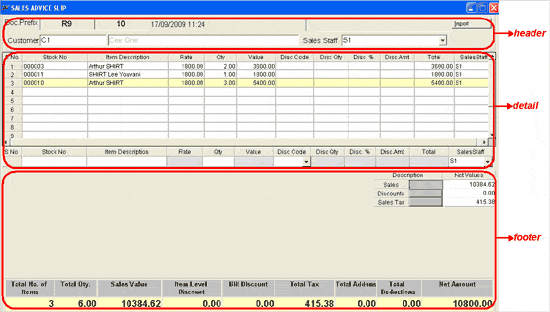

The SALES ADVICE SLIP window is as shown. The fields displayed are indicative and would depend on the slips configuration of your Shoper 9 POS.
The details accepted during the generation of sales advice slips can be grouped as shown.

Click the links to learn more about each group.
Header: The header part of the sales advice slip window allows you to accept details like customer code and sales staff code. Also, the details like bill prefix, bill number and bill date and time are displayed in the header part. Apart from this, the header part allows you to import the details of the items to be included in the sales advice slip.
Detail: The detail part of the sales advice slip window has item details grid as well as direct entry grid. The direct entry grid is used to accept the details stock no., item description, rate and quantity and so on, of each item selected for generating the sales advice slip. Once the item details of a stock item is accepted through direct entry grid, the same is displayed in the item details grid.
Footer: The footer part of the sales advice slip window displays the totals like total sales advice slip value, item level discount, total number of items in the slip and net amount of the slip and so on. Apart from slip totals, you are exposed to a separate grid, which displays the total values of sales advice slip, discounts, sales tax exclusively.